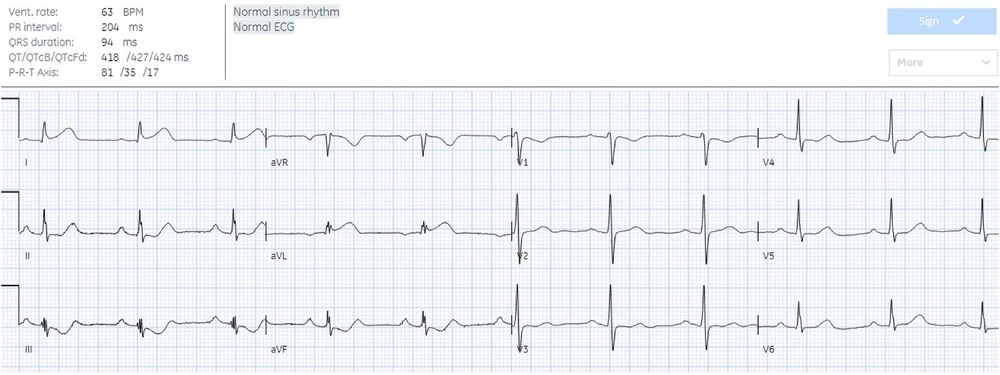
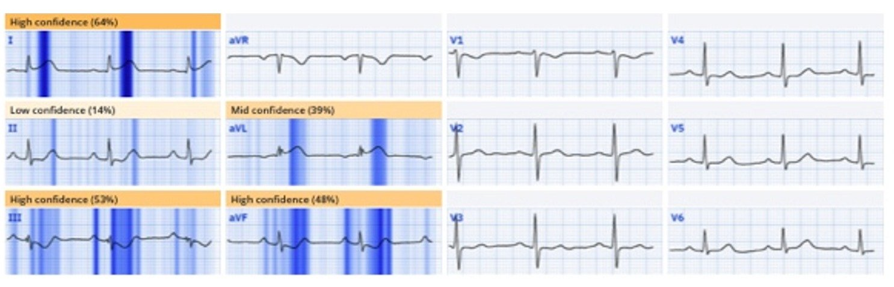
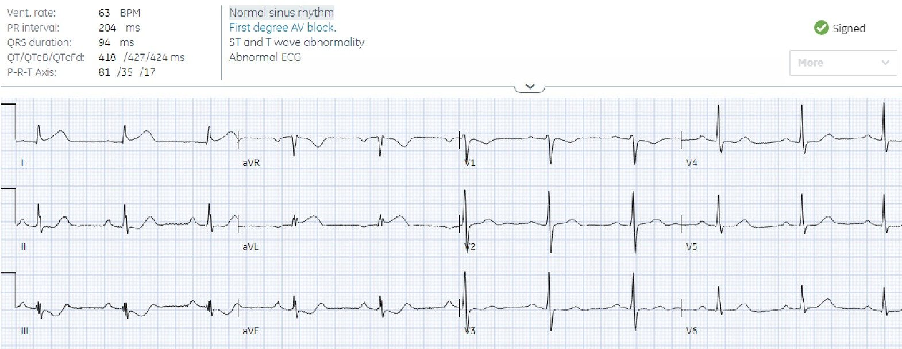
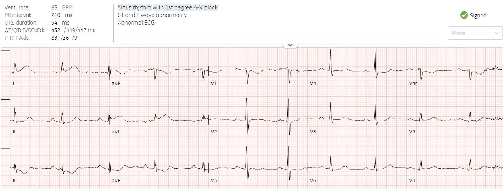
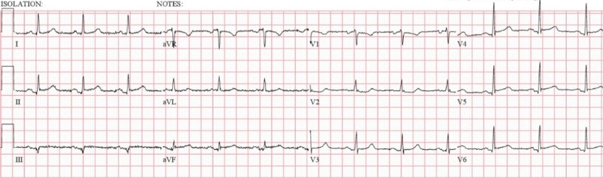
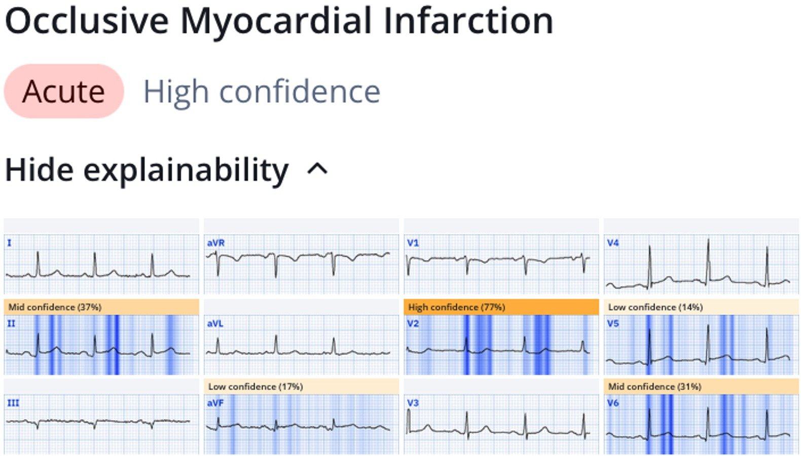
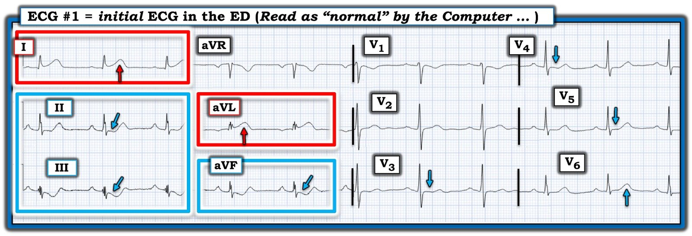

12/03/2025 — Đau ngực và điện tâm đồ “bình thường” theo máy tính. Chờ troponin? Và tiêu chuẩn tham chiếu cho chẩn đoán điện tâm đồ là gì? Bác sĩ tim mạch hay kết cục?
Bản dịch tiếng Việt của bài "Chest pain and computer ‘normal’ ECG. Wait for troponin? And what is the reference standard for ECG diagnosis? Cardiologist or outcome?" – Dr. Smith’s ECG Blog. Giữ nguyên toàn bộ 8 hình ảnh của bản gốc.
Tác giả
Jesse McLaren
Một bệnh nhân 50
tuổi đến khu phân loại vì đau ngực một giờ, với điện tâm đồ sau đây
được thuật toán máy tính (GE Marquette SL) dán nhãn “bình thường”.


Bạn nghĩ gì?
Có
nhịp xoang bình thường, blốc AV độ một, sóng R xuất hiện sớm, điện thế bình thường.
Có sóng T tối cấp ở I/aVL kèm ST chênh xuống soi gương ở các chuyển đạo dưới,
đủ để chẩn đoán nhồi máu cơ tim do tắc vùng bên cao.
Đây là
kết quả đọc của Queen of Hearts (OMI với độ tin cậy cao):


Nhưng nhiều nghiên cứu nhỏ đã kết luận (một cách sai lầm) rằng các điện tâm đồ lúc phân loại (triage) được thuật toán
máy tính dán nhãn “bình thường” thì không cần làm gián đoạn bác sĩ để đọc.(xem tài liệu tham khảo bên dưới)
Tiêu chuẩn vàng để đọc điện tâm đồ là gì: có phải là kết quả đọc của bác sĩ tim mạch?
Nghiên cứu mới nhất là của Langlois-Carbonneau và cs. Safety and accuracy of the
computer interpretation of normal ECGs at triage (Tính an toàn và độ chính xác của kết quả đọc bằng máy tính đối với điện tâm đồ bình thường lúc phân loại). CJEM 2025. Họ kết luận: “Các phát hiện của chúng tôi làm tăng độ tin cậy vào kết quả đọc tự động “bình thường” của phần mềm điện tâm đồ GE Marquette 12 SL trong việc dự đoán một kết cục lành tính. Dữ liệu của chúng tôi củng cố rằng xử trí tức thời đối với một bệnh nhân có kết quả đọc tự động điện tâm đồ lúc phân loại là bình thường không bị thay đổi bởi việc bác sĩ khoa cấp cứu (ED) đọc điện tâm đồ theo thời gian thực.”
Nhưng cũng như nhiều
nghiên cứu tương tự, nghiên cứu này nhỏ (một năm tại một trung tâm, không cho biết
tỷ lệ mới mắc của tắc mạch vành cấp), và nó dùng làm tiêu chuẩn vàng kết quả
đọc điện tâm đồ cuối cùng của bác sĩ tim mạch – chứ không phải kết cục của bệnh nhân!
(Bình luận của Smith: đây là một thước đo kết cục rất ngớ ngẩn)
Điều gì xảy ra
nếu chúng ta áp dụng phương pháp đó cho điện tâm đồ ở trên?


Kết quả
đọc cuối cùng của bác sĩ tim mạch (được làm mù) chỉ là “bất thường ST và sóng T” không đặc hiệu.
Nếu lấy đây làm tiêu chuẩn vàng, chúng ta sẽ kết luận rằng kết quả đọc bằng máy tính
là an toàn và chính xác – ít nhất là đủ chính xác để không bỏ sót “STEMI”,
và rằng không nên làm gián đoạn bác sĩ để đọc nó, vì sẽ
không có thay đổi gì trong xử trí bệnh nhân.
Nếu
làm theo lời khuyên này, bệnh nhân sẽ vẫn ở lại phòng
chờ, đợi được nhân viên y tế khám. Troponin đầu tiên bình thường (6ng/L, chỉ vừa nhỉnh hơn
giới hạn phát hiện là 2ng/L, và dưới giới hạn trên bình thường là 26ng/L). Nhưng
troponin là một chiếc gương chiếu hậu, cho thấy tổn thương đã xảy ra rồi,
và thường vẫn nằm trong giới hạn bình thường trong vòng 2 giờ đầu kể từ khi khởi phát tắc mạch vành cấp.
Vì vậy, chờ troponin liên tiếp sẽ còn làm chậm tái tưới máu hơn nữa.
Bình luận của Smith: chúng tôi đã chỉ ra rằng troponin đầu tiên, ngay cả trong STEMI điển hình rõ rệt, vẫn âm tính trong 25% trường hợp.
May mắn thay,
bác sĩ cấp cứu được cho xem điện tâm đồ ngay lập tức và nhận ra ngay tắc vùng bên cao. Vì vậy họ đã thay đổi xử trí bệnh nhân theo thời gian thực bất chấp sự trấn an sai lầm của điện tâm đồ “bình thường”. Một điện tâm đồ 15 chuyển đạo được ghi, cho hình ảnh tương tự và có cùng
kết quả đọc cuối cùng (được làm mù) của bác sĩ tim mạch. Dù các điện tâm đồ liên tiếp đều “STEMI âm tính”, phòng thông tim (cath lab) vẫn được kích hoạt.


Tiêu chuẩn vàng để đọc điện tâm đồ là gì: kết cục của bệnh nhân!!!
Trên phim chụp mạch vành có tắc 99% nhánh chéo
thứ nhất với dòng chảy TIMI 1. Troponin ghi lại là 4,000ng/L và không được làm lại
sau đó, và không có điện tâm đồ theo dõi. Nhờ kích hoạt phòng thông tim
nhanh chóng, chẩn đoán lúc ra viện là “STEMI” dù không có điện tâm đồ nào đạt tiêu chuẩn
STEMI theo kết quả đọc của bác sĩ tim mạch.
Bình luận của Smith: chúng tôi có một bài báo đang được xem xét cho thấy yếu tố có ý nghĩa độc lập duy nhất đối với chẩn đoán cuối cùng là STEMI hay nhồi máu cơ tim không ST chênh lên (Non-STEMI) là thời gian đến khi được điều trị, chứ không phải sự hiện diện của tiêu chuẩn ST chênh lên tính bằng milimét, cũng không phải sự hiện diện của tắc mạch!
Nhưng
theo Langlois-Carbonneau và cs., ngay cả chẩn đoán cuối cùng là STEMI cũng không
làm thay đổi kết luận của họ rằng các điện tâm đồ “bình thường” theo máy tính là an toàn và chính xác.
Ca 2 trong chính bài báo này
Họ đưa vào ca sau đây (khác với ca ở trên!):
Một phụ nữ 68 tuổi đến khoa cấp cứu với bệnh sử đau ngực “không điển hình” (Smith: “không điển hình” là một cách mô tả đau ngực vô giá trị). Đây là điện tâm đồ của bà:


Bạn nghĩ gì?
Smith: điện tâm đồ này đủ để chẩn đoán OMI cấp vùng dưới-sau-bên
Đây là phần mô tả trong bài báo:
“Bệnh nhân nữ 68 tuổi với chẩn đoán cuối cùng là STEMI đến
khoa cấp cứu với bệnh sử đau ngực không điển hình. Kết quả đọc của bác sĩ khoa cấp cứu
đối với điện tâm đồ đầu tiên của bà là “ST chênh lên ở II-aVF và V5-V6,(…)dạng lõm, không có thay đổi
soi gương.” Khi troponin trả về dương tính, thủ thuật thông tim cấp cứu
được kích hoạt. Hội chẩn tim mạch đầy đủ được thực hiện vào ngày hôm sau và
điện tâm đồ ban đầu được phân tích là ‘ST chênh lên nhẹ ở II-aVF-V4-V5-V6.’ Chẩn đoán
cuối cùng của bệnh nhân vẫn là STEMI nhưng điều này còn gây tranh cãi vì bệnh nhân
thực ra không đáp ứng tiêu chuẩn STEMI trên điện tâm đồ ban đầu. Hơn nữa, điện tâm đồ
của bệnh nhân này được bác sĩ tim mạch điều trị chính (được làm mù) đọc là “bình thường”.”
Như vậy
ngay cả khi nhìn lại, các tác giả này vẫn kết luận rằng kết quả đọc bằng máy tính trên tờ điện tâm đồ đáng tin cậy hơn cho chẩn đoán cuối cùng so với một động mạch vành
thực sự bị tắc cấp!
Bình luận của Smith: điều này còn ngớ ngẩn hơn nữa.
Đây là kết quả đọc của PMCardio AI OMI Model Queen
of Hearts:


Điều này
khẳng định rằng các điện tâm đồ “bình thường” theo máy tính không an toàn cũng không chính xác, rằng
bác sĩ có thể nhận ra OMI kín đáo theo thời gian thực (được tăng cường bởi AI), và rằng tiêu chuẩn
vàng nên là kết cục của bệnh nhân.
Điều cần nhớ
1.
Điện tâm đồ “bình thường” theo máy tính không an toàn
cũng không chính xác. Xem >
50 ca trên Dr. Smith’s EGC Blog. Chúng tôi cũng đã công bố nghiên cứu lớn nhất về
câu hỏi này: Emergency
Department Code STEMI patients with initial electrocardiogram labeled ‘normal’
by computer interpretation: a 7-year retrospective review (Bệnh nhân báo động STEMI tại khoa cấp cứu có điện tâm đồ ban đầu được máy tính dán nhãn “bình thường”: tổng quan hồi cứu 7 năm). Khi dùng kết cục
của bệnh nhân (báo động STEMI có tổn thương thủ phạm), chúng tôi thấy 4% có điện tâm đồ lúc phân loại
được máy tính dán nhãn “bình thường” – một phần ba trong số đó được bác sĩ cấp cứu
nhận ra theo thời gian thực. Con số này đánh giá thấp tỷ lệ điện tâm đồ “bình thường” giả
của máy tính vì chúng tôi chỉ đưa vào các ca báo động STEMI, không gồm các ca Non-STEMI có OMI.
2.
Tiêu chuẩn vàng nên là kết cục
của bệnh nhân. Xem thư gửi ban biên tập của chúng tôi để phản hồi: McLaren, Meyers, Smith,
Chartier. What
is the gold standard for ECG interpretation: computer, cardiologist, or patient
outcome (Tiêu chuẩn vàng để đọc điện tâm đồ là gì: máy tính, bác sĩ tim mạch hay kết cục của bệnh nhân). CJEM ngày 10 tháng Ba năm 2025
3. Troponin ban đầu không đáng tin cậy trong OMI,
và có thể nằm trong giới hạn bình thường dù có triệu chứng cấp tính
Các tài liệu tham khảo kết luận sai lầm rằng nếu thuật toán thông thường cho là “bình thường” thì điện tâm đồ lúc phân loại không cần bác sĩ xem lại.
1. Winter LJ, Dhillon RK, Pannu GK, Terrazza P, Holmes JF, Bing ML. Emergent cardiac outcomes in patients with normal electrocardiograms in the emergency department. Tạp chí Am J Emerg Med. 2022; 51: 384–387.
2. Villarroel NA, Houghton CJ, Mader SC, Poronsky KE, Deutsch AL, Mader TJ. A prospective analysis of time to screen protocol ECGs in adult emergency department triage patients. Tạp chí Am J Emerg Med. 2021; 46: 23–26.
3. Hughes KE, Lewis SM, Katz L, Jones J. Safety of computer interpretation of normal triage
electrocardiograms. Tạp chí Acad Emerg Med [Internet] 2017;24(1):120–4. Truy cập tại:
https://pubmed.ncbi.nlm.nih.gov/27519772/
4. Deutsch A, Poroksy K, Westafer L, Visintainer P, Mader T. Validity of computer-interpreted “normal” and
“otherwise normal” ECG in emergency department triage patients. Tạp chí West J Emerg Med [Internet] 2024 [trích dẫn
ngày 26 tháng Tám năm 2024];25(1):3–8. Truy cập tại: https://www.ncbi.nlm.nih.gov/pmc/articles/PMC10777178/
5. Langlois-Carbonneau V, Dufresne F, Labbé È, Hamelin K, Berbiche D, Gosselin S. Safety and accuracy of
the computer interpretation of normal ECGs at triage. Tạp chí CJEM [Internet] 2024;26(12):857–64. Truy cập tại:
https://link.springer.com/article/10.1007/s43678-024-00790-5

===================================
BÌNH LUẬN CỦA TÔI, bởi KEN GRAUER, MD (12/3/2025):
===================================
Ca hôm nay của bác sĩ McLaren một lần nữa đặt ra câu hỏi: “Thế nào là một điện tâm đồ ‘bình thường’?” (Xin xem Bình luận của tôi ở cuối trang trong bài đăng ngày 15 tháng Một năm 2025 để biết “Quan điểm của tôi” về thế nào là một điện tâm đồ “bình thường”).
Những độc giả thường xuyên của Dr. Smith’s ECG Blog đã rất quen thuộc với các sự thật sau:
- Một điện tâm đồ “bình thường” không phải là điện tâm đồ được gọi là “bình thường” bởi bất kỳ chương trình đọc điện tâm đồ bằng máy tính nào ngoài QOH (Queen Of Hearts).
- Một điện tâm đồ “bình thường” không phải là điện tâm đồ được gọi là “bình thường” bởi một bác sĩ tim mạch chưa chấp nhận và tin vào Tuyên ngôn OMI (OMI Manifesto) (Xem bài đăng ngày 31 tháng Bảy năm 2020 — và — McLaren, Meyers & Smith: J Electrocardiol 76:39-44, 2023 — và — Meyers, Weingart, Smith: The OMI Manifesto, 2018).
- Như bác sĩ McLaren đã nêu — một kết quả hs-Troponin ban đầu bình thường hoàn toàn không loại trừ khả năng OMI cấp. Xin trích lời bác sĩ Smith: “Dùng Troponin để chẩn đoán tắc mạch vành cấp giống như dựa vào gương chiếu hậu để lái xe qua một vụ tai nạn liên hoàn: Nó cho thấy đống đổ nát phía sau bạn, những gì đã xảy ra rồi, nhưng không thể nhìn thấy con đường phía trước.” Kết quả là — “Một kết quả Troponin ban đầu bình thường có thể đem lại sự trấn an sai lầm, trong khi một vụ đâm trực diện đang diễn ra theo thời gian thực!” (trích từ bài đăng ngày 24 tháng Ba năm 2023).
- Có tới 1/3 bệnh nhân “NSTEMI” hóa ra bị tắc mạch vành cấp mà có thể hưởng lợi từ PCI — và — Hơn 1/2 bệnh nhân tắc mạch vành cấp không biểu hiện ST chênh lên (Số liệu từ McLaren, Meyers, Smith và cs.: JACC Adv 3:101314, 2024).
- ĐIỀU CỐT LÕI: Đối chiếu bệnh sử với mức độ đau ngực (CP) tương đối đi kèm từng điện tâm đồ (và với troponin liên tiếp) — chính xác hơn nhiều trong việc nhận diện nhanh tắc mạch vành cấp so với việc chờ cho đến khi xuất hiện “đủ” ST chênh lên để đạt tiêu chuẩn STEMI (và quá thường xuyên với các OMI cấp — mức ST chênh lên “bắt buộc” này không bao giờ xuất hiện).
Máy tính Không thể tin cậy được:
Quay lại ca hôm nay — tôi đã đánh dấu trong Hình 1 điện tâm đồ ban đầu của bệnh nhân 50 tuổi này, người đến khoa cấp cứu vì CP (Chest Pain – đau ngực) mới khởi phát kéo dài 1 giờ.
- Thật đáng kinh ngạc — chương trình máy tính GE Marquette SL đã dán nhãn điện tâm đồ trong Hình 1 là “bình thường”.
Như bác sĩ McLaren đã nêu — điện tâm đồ #1 đủ để chẩn đoán tắc mạch vành cấp. Ở bệnh nhân đau ngực mới xuất hiện này — việc thậm chí không ghi nhận các bất thường ST-T rõ ràng ở 5/6 chuyển đạo chi lập tức làm mất uy tín bất kỳ giá trị nào mà thuật toán điện tâm đồ bằng máy tính này có thể có.
- Xét biên độ QRS khiêm tốn ở mỗi chuyển đạo chi — mức ST chênh lên ở các chuyển đạo I bên cao và aVL là đáng kể. Hơn thế nữa — sóng T ở 2 chuyển đạo này rõ ràng là tối cấp (tức là, “đầy đặn” ở đỉnh và rộng ở đáy hơn nhiều so với mức đáng có, xét theo sóng R ở các chuyển đạo này nhỏ đến mức nào).
- Thay đổi ST-T soi gương rõ rệt không kém ở mỗi chuyển đạo dưới lập tức xác nhận tắc mạch vành cấp cho đến khi chứng minh được điều ngược lại (tức là, các chuyển đạo II,III,aVF cho thấy ST chênh xuống dốc xuống, với điểm thấp nhất của đoạn ST bị kéo rộng và phần cuối sóng T dương).
Mặc dù ST-T ở các chuyển đạo trước tim trông không cấp tính bằng — vẫn có những bất thường lan tỏa ở các chuyển đạo trước tim khiến tôi nghĩ đến OMI vùng sau hoặc bệnh nhiều nhánh mạch vành:
- Sóng R vốn đã cao ở chuyển đạo V2 là một dấu hiệu thường gặp trong OMI vùng sau.
- ST chênh lên nhẹ dốc lên thoai thoải vốn thường thấy ở các chuyển đạo V2,V3 thì không có.
- Đoạn ST dẹt một cách bất thường ở các chuyển đạo V3,V4,V5.
- Đặc biệt khi xét đến sóng T tối cấp kèm ST chênh lên mà chúng ta đã thấy ở các chuyển đạo chi bên I và aVL — tôi nghĩ rằng đỉnh sóng T bị rộng ra ở chuyển đạo V6 (nếu không nói là cả ở chuyển đạo V5) thể hiện các chuyển đạo trước tim bên tối cấp.
Xin nhấn mạnh: Các kết quả đọc điện tâm đồ bằng máy tính ngoài QOH (Queen Of Hearts) đơn giản là không thể tin cậy được.
- Dù đã nói như trên — lỗi không nằm ở các chương trình máy tính này. Đơn giản là các chương trình này chưa bao giờ được lập trình với đủ dữ liệu kết cục để có thể đánh giá điện tâm đồ chính xác ở bệnh nhân đau ngực. Chúng ta cần biết điều này!
- May mắn thay — điện tâm đồ trong ca hôm nay đã được nhanh chóng đưa cho bác sĩ khoa cấp cứu xem, và bác sĩ đã nhận ra đúng các bất thường cấp tính.

